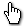
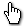

| Constant | Cursor |
|---|---|
| cr_none | |
| cr_default |  |
| cr_arrow | |
| cr_cross | |
| cr_beam | |
| cr_size_nesw | |
| cr_size_ns |  |
| cr_size_nwse |  |
| cr_size_we |  |
| cr_uparrow |  |
| cr_hourglass |  |
| cr_drag |  |
| cr_appstart |  |
| cr_handpoint |  |
| cr_size_all |  |
window_get_cursor();
Returns:Constant
With this function you can get the current cursor being used in the game window, with the return value being any one of the constants listed below (to set the current cursor being used you can use the
function window_set_cursor which also takes these constants):
| Constant | Cursor |
|---|---|
| cr_none | |
| cr_default | |
| cr_arrow | |
| cr_cross | |
| cr_beam | |
| cr_size_nesw | |
| cr_size_ns | |
| cr_size_nwse | |
| cr_size_we | |
| cr_uparrow | |
| cr_hourglass | |
| cr_drag |  |
| cr_appstart | |
| cr_handpoint | |
| cr_size_all | |
if mouse_check_button_pressed(mb_left)
{
if window_get_cursor() != cr_drag window_set_cursor(cr_drag);
}
The above code will change the window cursor to the standard windows drag cursor if the left mouse button has been pressed and it has not already been changed previously.